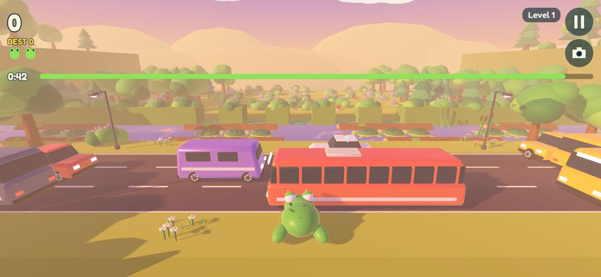

3D Frog
A 3D arcade crossing game. Hop a frog across roads and rivers, ride logs and turtles, and bring every frog home — seen from right behind the frog, with traffic looming past and the horizon ahead.
Un jeu d’arcade 3D de traversée. Faites sauter une grenouille par-dessus routes et rivières, voyagez sur les rondins et les tortues, et ramenez chaque grenouille à la maison — vu de juste derrière la grenouille, la circulation qui défile et l’horizon devant soi.

The crossing, from the frog’s point of view.
Lanes of traffic, then a river of drifting logs and turtles, then the home bays on the far bank. The recipe is familiar; the viewpoint is not. The default camera is a low chase view right behind the frog, so cars are something that comes at you rather than something you watch from above.
Two other views are one tap away — first person, and a high classic overview — and the game plays in portrait as well as landscape.
Five ways to cross.
Classic
Five bays to fill, three lives, and difficulty that rises with every round.
Endless
One life. Keep moving forward and outrun the flood.
Time Attack
75 seconds on the clock; every frog brought home adds time.
Challenges
Twelve handcrafted levels, three stars to earn on each.
Daily Run
One run per day, seeded by the date.
Four environments
Meadow Day, Sunset Highway, Misty Dawn and Neon Night.
Fair, and quick under the thumb.
Fair by construction
Lanes follow deterministic periodic patterns, and every generated level is proven solvable by a conservative search before it is used. Hitboxes are forgiving, and landings on logs and turtles tolerate the edges.
Warned before you see it
Red arrows point at traffic that is still outside the view, so the close camera never hides the car that gets you.
Responsive controls
A swipe fires as soon as the finger has travelled about 5 mm, without lifting. A tap hops forward, an optional on-screen d-pad fires on touch-down, and one hop can be buffered during the end of a jump.
Progression
Experience and player levels, 16 achievements, 8 frogs to unlock, a high score per mode and lifetime statistics, in a checksummed save file with a backup.
How to play.
| Action | Touch | Keyboard |
|---|---|---|
| Hop | Swipe in a direction, or the d-pad | Arrow keys / WASD |
| Hop forward | Tap | Up / W |
| Pause | Pause button, Android Back | Esc / P |
| Change view | Camera button | Settings |
La traversée, du point de vue de la grenouille.
Des voies de circulation, puis une rivière de rondins et de tortues à la dérive, puis les abris sur la rive d’en face. La recette est connue ; le point de vue, non. La caméra par défaut est une vue de poursuite basse, juste derrière la grenouille : les voitures sont quelque chose qui vous arrive dessus, et non quelque chose qu’on regarde d’en haut.
Deux autres vues sont à portée de doigt — la première personne, et une vue classique en hauteur — et le jeu se joue en portrait comme en paysage.
Cinq façons de traverser.
Classique
Cinq abris à remplir, trois vies, et une difficulté qui monte à chaque manche.
Sans fin
Une seule vie. Avancez sans cesse pour échapper à la montée des eaux.
Contre-la-montre
75 secondes au compteur ; chaque grenouille ramenée ajoute du temps.
Défis
Douze niveaux conçus à la main, trois étoiles à gagner sur chacun.
Course du jour
Une course par jour, tirée de la date.
Quatre décors
Meadow Day, Sunset Highway, Misty Dawn et Neon Night.
Juste, et vif sous le pouce.
Équitable par construction
Les voies suivent des motifs périodiques déterministes, et chaque niveau généré est prouvé faisable par une recherche prudente avant d’être utilisé. Les zones de collision sont indulgentes, et les atterrissages sur rondins et tortues tolèrent les bords.
Prévenu avant de voir
Des flèches rouges signalent la circulation encore hors champ : la caméra rapprochée ne cache jamais la voiture qui vous aura.
Des commandes réactives
Un glissement se déclenche dès que le doigt a parcouru 5 mm environ, sans le lever. Un toucher fait sauter en avant, une croix directionnelle optionnelle réagit dès le contact, et un saut peut être mis en attente pendant la fin du précédent.
Progression
Expérience et niveaux de joueur, 16 succès, 8 grenouilles à débloquer, un meilleur score par mode et des statistiques cumulées, dans une sauvegarde à somme de contrôle doublée d’une copie de secours.
Comment jouer.
| Action | Tactile | Clavier |
|---|---|---|
| Sauter | Glisser dans une direction, ou la croix directionnelle | Flèches / ZQSD |
| Sauter en avant | Toucher l’écran | Haut / Z |
| Pause | Bouton pause, touche Retour d’Android | Échap / P |
| Changer de vue | Bouton caméra | Réglages |
A look inside.Le jeu en images.
How it is built.
| Engine | Godot 4.7.2 with typed GDScript and the Vulkan mobile renderer. |
| Assets | Original code, models, audio and branding. |
| Levels | Deterministic lane patterns; generated levels pass a solvability search before use. |
| Tests | 124 automated tests, run headless. |
| Saves | A checksummed save file with a backup copy. |
| Display | Portrait and landscape, with quality presets measured on a mid-range phone. |
Comment c’est construit.
| Moteur | Godot 4.7.2, GDScript typé et moteur de rendu mobile Vulkan. |
| Ressources | Code, modèles, sons et identité visuelle originaux. |
| Niveaux | Des motifs de voies déterministes ; les niveaux générés passent une recherche de faisabilité avant d’être utilisés. |
| Tests | 124 tests automatisés, exécutés sans affichage. |
| Sauvegarde | Un fichier à somme de contrôle, avec copie de secours. |
| Affichage | Portrait et paysage, avec des préréglages de qualité mesurés sur un téléphone de milieu de gamme. |